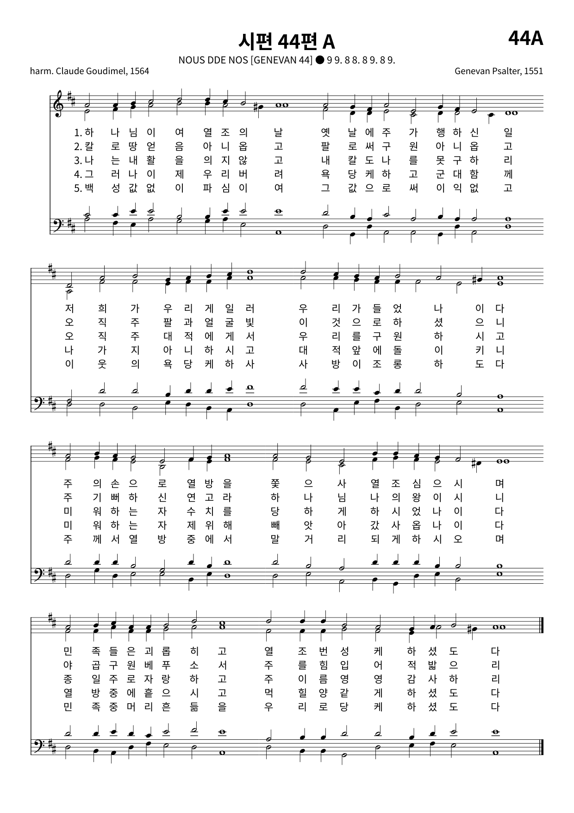

시편 44편 A
NOUS DDE NOS [GENEVAN 44] · 9 9. 8 8. 8 9. 8 9.
곡조: Genevan Psalter, 1551 · 화성: Claude Goudimel, 1564 · 가사: 개역한글판 시편 44편 편역(AI 초벌 편역판 · 신학 감수 전) · 5절
시편 44편은 2곡으로 나누어 실었습니다: A B · 이 곡은 시편 44편 가사의 1~5번째 절입니다.
악보 PDF MusicXML(출력용) MusicXML(반주용, 전주·반복 포함) 개역한글 시편 44편 읽기
악보
← 시편 43편 목록반주 재생(준비 중)시편 44편 B →
가사
1절
하나님이여 열조의 날
옛날에 주가 행하신 일
저희가 우리게 일러
우리가 들었나이다
주의 손으로 열방을
쫓으사 열조 심으시며
민족들은 괴롭히고
열조 번성케 하셨도다
하나님이여 열조의 날
옛날에 주가 행하신 일
저희가 우리게 일러
우리가 들었나이다
주의 손으로 열방을
쫓으사 열조 심으시며
민족들은 괴롭히고
열조 번성케 하셨도다
2절
칼로 땅 얻음 아니옵고
팔로써 구원 아니옵고
오직 주 팔과 얼굴 빛
이것으로 하셨으니
주 기뻐하신 연고라
하나님 나의 왕이시니
야곱 구원 베푸소서
주를 힘입어 적 밟으리
칼로 땅 얻음 아니옵고
팔로써 구원 아니옵고
오직 주 팔과 얼굴 빛
이것으로 하셨으니
주 기뻐하신 연고라
하나님 나의 왕이시니
야곱 구원 베푸소서
주를 힘입어 적 밟으리
3절
나는 내 활을 의지 않고
내 칼도 나를 못 구하리
오직 주 대적에게서
우리를 구원하시고
미워하는 자 수치를
당하게 하시었나이다
종일 주로 자랑하고
주 이름 영영 감사하리
나는 내 활을 의지 않고
내 칼도 나를 못 구하리
오직 주 대적에게서
우리를 구원하시고
미워하는 자 수치를
당하게 하시었나이다
종일 주로 자랑하고
주 이름 영영 감사하리
4절
그러나 이제 우리 버려
욕 당케 하고 군대 함께
나가지 아니하시고
대적 앞에 돌이키니
미워하는 자 제 위해
빼앗아 갔사옵나이다
열방 중에 흩으시고
먹힐 양 같게 하셨도다
그러나 이제 우리 버려
욕 당케 하고 군대 함께
나가지 아니하시고
대적 앞에 돌이키니
미워하는 자 제 위해
빼앗아 갔사옵나이다
열방 중에 흩으시고
먹힐 양 같게 하셨도다
5절
백성 값없이 파심이여
그 값으로써 이익 없고
이웃의 욕 당케 하사
사방이 조롱하도다
주께서 열방 중에서
말거리 되게 하시오며
민족 중 머리 흔듦을
우리로 당케 하셨도다
백성 값없이 파심이여
그 값으로써 이익 없고
이웃의 욕 당케 하사
사방이 조롱하도다
주께서 열방 중에서
말거리 되게 하시오며
민족 중 머리 흔듦을
우리로 당케 하셨도다